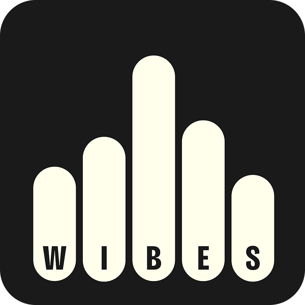

Voice carries something no other format can. When someone speaks to you in their own language, with their own warmth, it stays with you in a way a text message never does.
Remarkable tools exist today that capture voice and turn it into polished, accurate text within seconds. That technology works well. But when the speaking is done, what do you have to share? The words, yes. Not the voice. A raw audio file has no presentation, no context, nothing that says this was made for someone specific.
Capturing voice was solved. Sharing it meaningfully was not.
That gap is what Wibe Stories was built to close. Your voice and your words, together, in something visual and keepable. A card that carries both. In any language. For anyone.
Here are a couple of stories.
Four cousins, spread across different cities and countries. Close, still in touch, but years had passed without any of us spending real time together. I made a short voice card and dropped it into our group chat one evening. The conversation that followed led to something none of us had managed to do in years. We cleared our schedules and spent a week together, just the four of us.
For my grandmother’s birthday, I wanted to give her something she could keep. I made her a card in Hindi, a birthday wish and a love message together, telling her how much her presence means. She listened to it more than once. She said it was the best gift she had ever received.
That is what voice does when it has somewhere to live. It does not just communicate. It connects.
Wibe Stories exists so the voices you love are never lost.
What we care about

We care about
voices worth keeping.
We care about
languages that deserve representation.
We care about
simplicity over complexity.
We care about
connections that last.
We care about
privacy by design.
We care about
building something independent.
Questions
Wispr Flow is an AI voice input layer that works across Mac, Windows, iPhone, and Android. It lets you speak naturally and turns messy speech into polished text in any app: emails, documents, messages, code comments, and more. Wibe Stories is an independent project inspired by the same idea: making voice input fast and natural.
Wibe Stories is built by Yellow Green Labs, an independent project focused on making voice accessible and shareable. It is not affiliated with Wispr Flow, though we were inspired by the same idea: that speaking should feel as natural as typing.
No. Wibe Stories is an independent project. Wispr Flow is a separate product that inspired some of our thinking around voice input, but the two projects have no official relationship.
When you create a card, your text is sent to speech-to-text and AI tone rewriting services. We do not store your card text permanently on our servers. Only the metadata needed to display a shared card link (text, name, tone, palette) is stored temporarily alongside the card image. See License & Terms in the footer menu for full details.
Email us at yellowgreenlabs@proton.me with questions, feedback, or just to say hello. We read every message.
Wibe (pronounced “vibe”) blends three words: vibe (the feeling), voice (the “i,” for speaking), and scribe (the “ibe,” for writing). That is exactly what the app does: speak it or type it, and keep the vibe of what you said.
Take your voice beyond cards. Wispr Flow lets you speak anywhere you type.